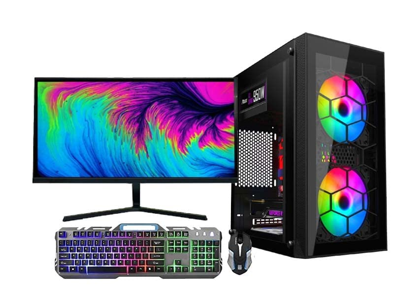
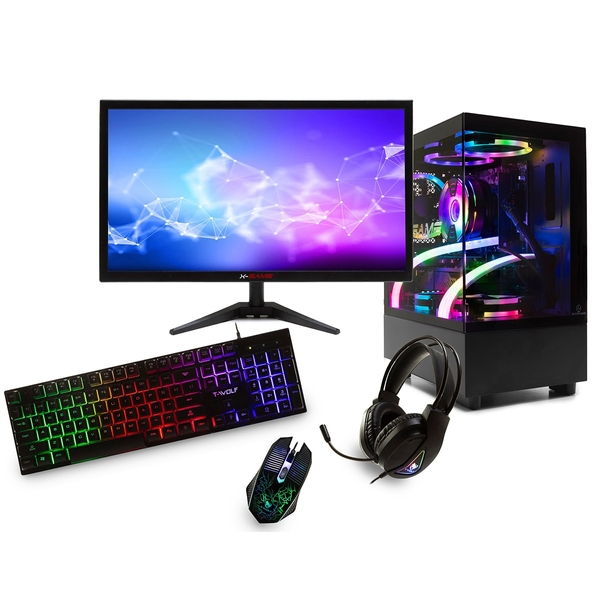
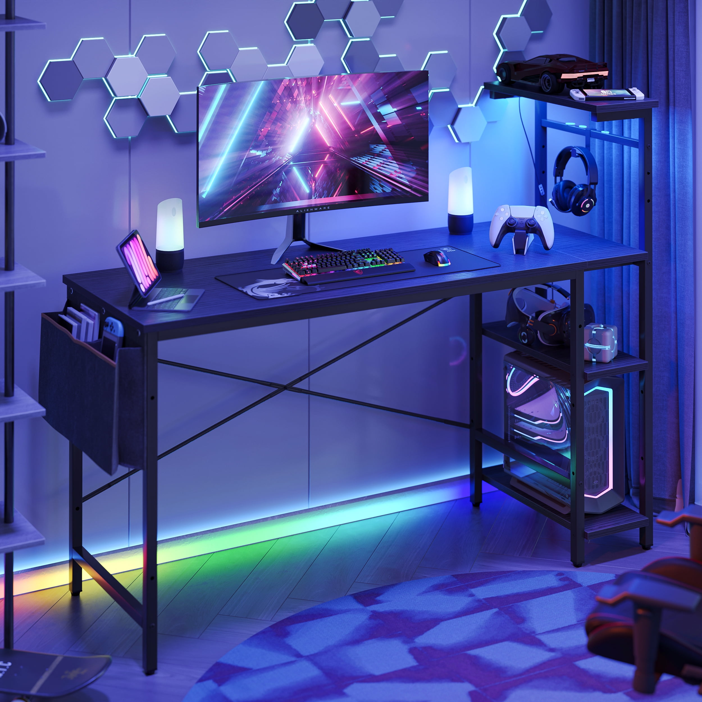

About Me
Hello! I’m a web developer passionate about creating responsive and user-friendly websites. This project demonstrates how to use `max-width` for clean and adaptive designs.
Portfolio

CHIST I5 Extreme Gaming Pc Full Setup (I5 4th Gen Core i5-4750 Gaming Desktop (16GB RAM/512)

X-Game Ryzen 5 Gaming PC, 16GB RAM, 1TB SSD, 4GB Graphics, 24" Monitor Bundle

Bestier Premium Gaming Computer Desk with LED Lights, Shelves - 52 inch